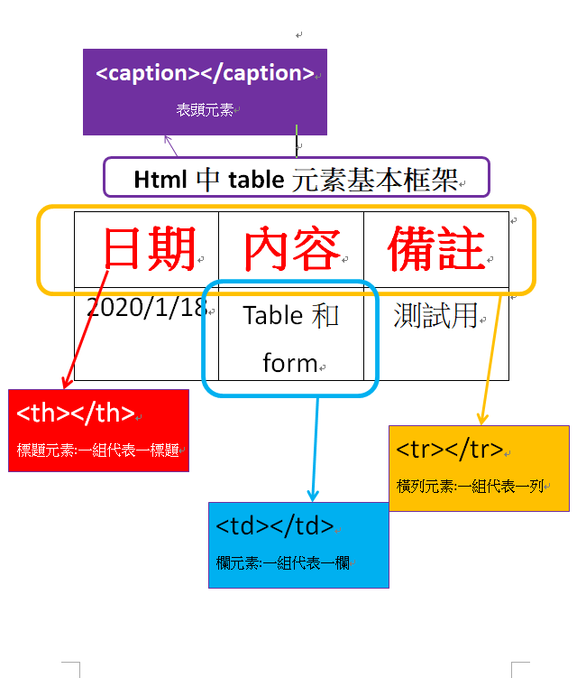

2020/1/18網頁開發筆記table和form
綜合筆記
1.table基本

- **上圖表格的語法
- <table>
<caption>Html中table元素基本框架<caption>
<tr>
<th>日期</th>
<th>內容</th>
<th>備註</th>
</tr>
<tr>
<td>2020/1/18</td>
<td>Table和form</td>
<td>測試用</td>
</tr>
</table>
以上寫法完成後，並不會看到邊框(詳細邊框設定可以在CSS使用)
2.form基本
提問筆記
table基本提問
- 如何做一個表格，和綜合筆記中的table標題相反?(呈現在直欄中)
- 如何把橫列合併?
- 如何把直欄合併?
- 如何把文字左右對齊?上下對齊?
- 如何同時把所有想要的欄位文字同時對齊，而不用一個一個調?要加入那些表格的語意標籤?
- 我要如何讓file屬性上傳檔案時，可以選多個檔案
form基本提問
- 為何用radio單選時，每個選項都還是可以被選擇?!怎麼處理呢?
- 要如何在單選複選選框中設置默選的選項呢?
- 那在下拉選單中，如何設置默認的選項呢?
- 我把下拉選單第一個選項設置為"請選擇"，並且已設成默認值，但我只想要他是一個提示作用，不想他被選中，要怎麼辦呢?
- 要做一個一次把所有選項都顯示出來的選單要怎麼用呢?像這樣的效果:
- 像上面那樣顯示出來後，我想要可以複選也能辦到嗎?像這樣:(按CTRL或用屬標拖選就可以複選)
綜合練習區
解答成果區
table解答
- 合併橫列在tr中使用colspan，如<tr colspan="2">就會將2列合併。(注意:只要打在第一列的tr中即可,被合併的那一列tr完全不用打出來,否則會多一列
- 合併直欄在td中使用rowspan，如<td rowspan="2">就會將2欄合併。(注意:只要打在第一欄td中即可,被合併的那一欄td完全不用打出來,否則會多一欄
**例如:下表格中要合併中間的那3欄，只要在第一欄的td中打rowspan即可
- 寫法如下:
-
<table border>
<tr><td></td><td rowspan="3"></td><td></td></tr>
<tr><td></td><td></td>l;</tr>
<tr><td></td><td></td>l;</tr>
</table>
- 如何對齊文字?在想對齊的tr或th或td中輸入align="對齊方式"。例如:<tr align="left">
上面align是左右對齊;上下對齊的屬性是valign
- 這時候就可以使用<tHead>或者<tBody>和<tFood>語意標籤
- 加入multiple即可
form解答